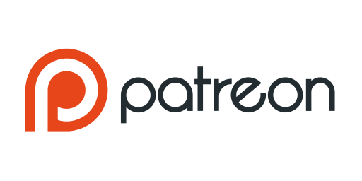

Nous soutenir
HMC Community – BoucleRP est un projet communautaire développé avec passion. Votre soutien permet de financer l’hébergement, les outils techniques et l’évolution continue du serveur.
💜 Soutenir via Patreon Le soutien est entièrement facultatif ❤️